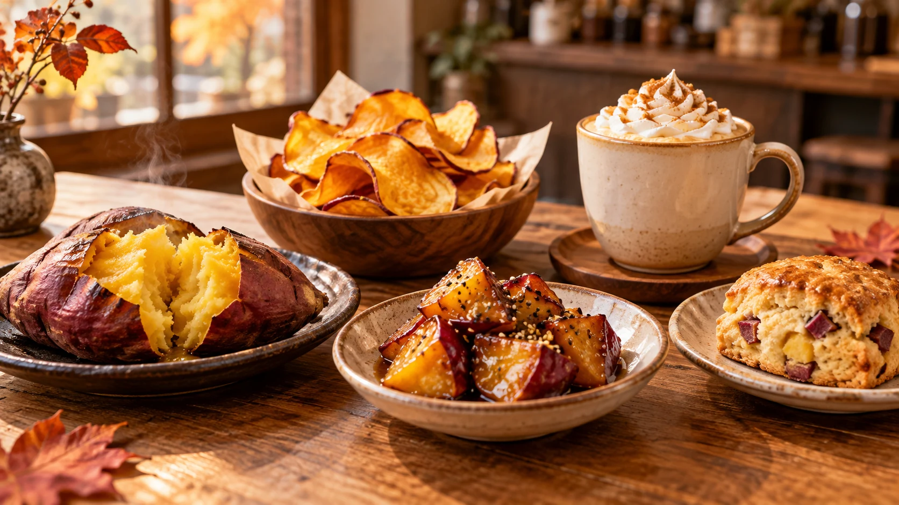
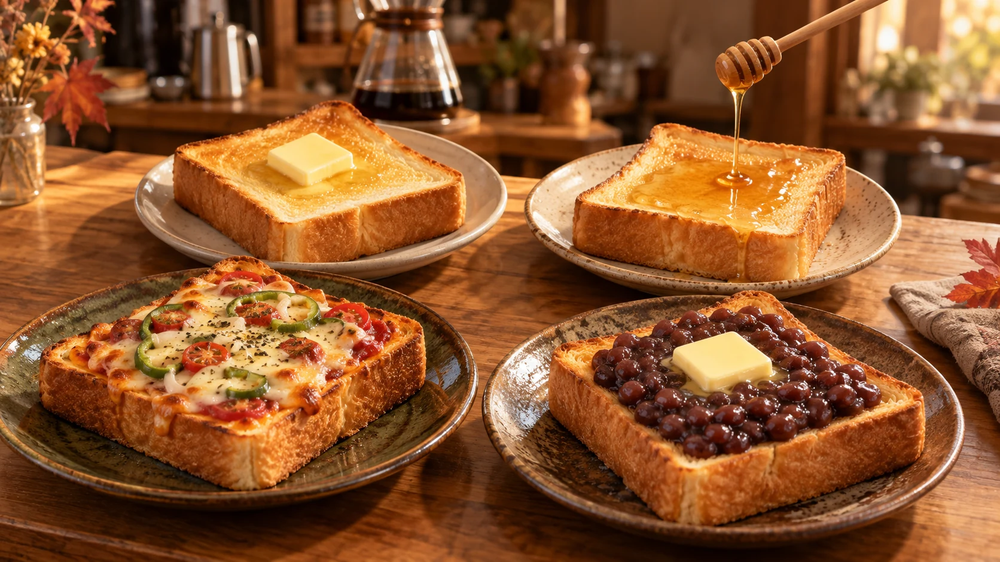
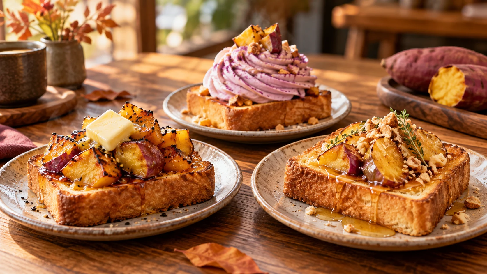

PAST LIMITED MENUS
過去の期間限定メニュー
Bean & Bits MARKETに登場した季節の味を、写真とともに振り返ります。掲載しているのは販売期間を終えた架空のメニューです。
OCTOBER LIMITED MENU
2026年10月の期間限定メニュー

🍠 さつまいも系
- 焼きいも40 MMC
- ひとくち大学いも35 MMC
- さつまいもチップス30 MMC
- おさつスコーン45 MMC
- さつまいもラテ50 MMC

🍞 食パン系
- 厚切りトースト30 MMC
- バタートースト35 MMC
- はちみつトースト45 MMC
- ピザトースト50 MMC
- あんバタートースト55 MMC

🍠🍞 合体メニュー
- 焼きいもバタートースト60 MMC
- さつまいもクリームトースト65 MMC
- おさつ＆はちみつトースト60 MMC